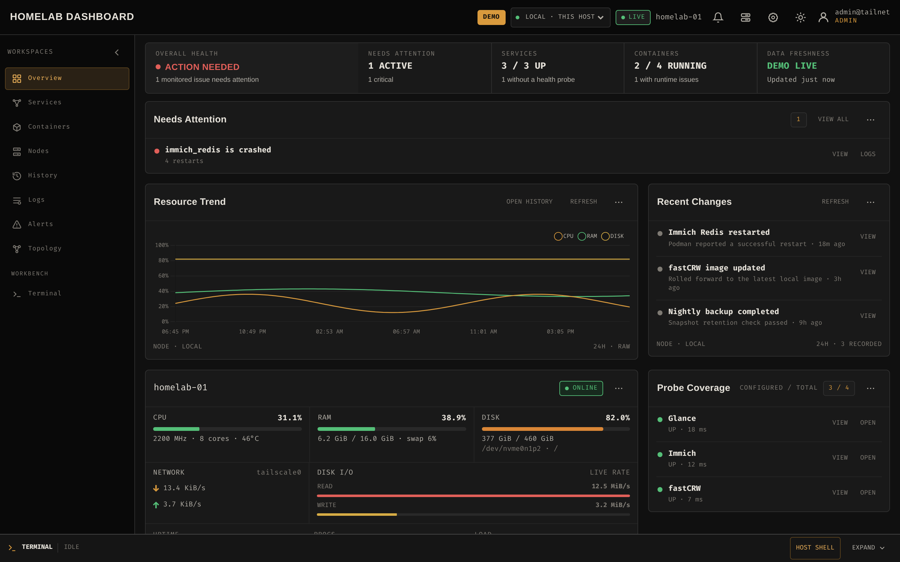
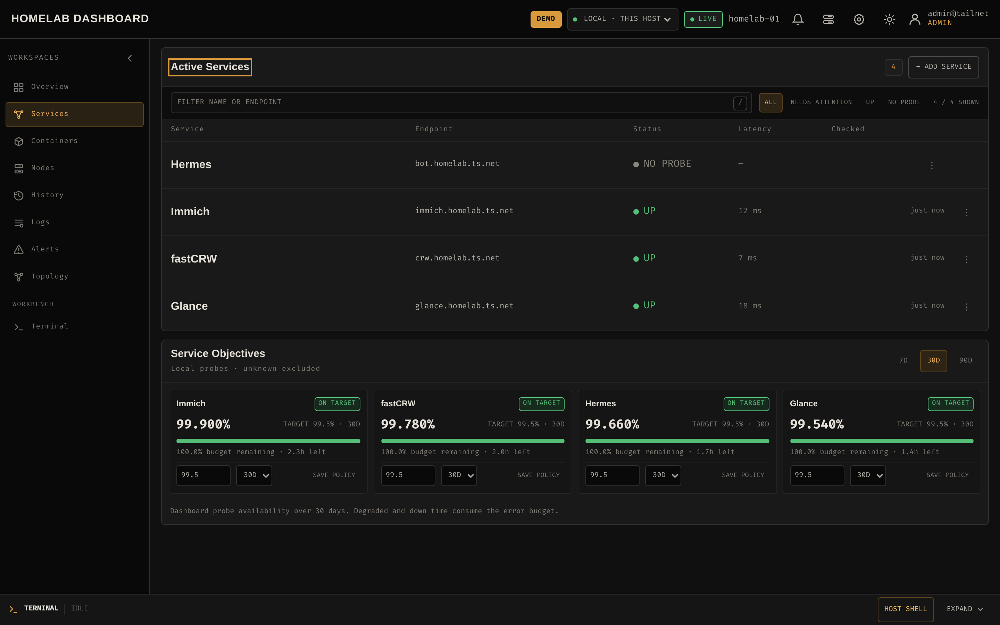
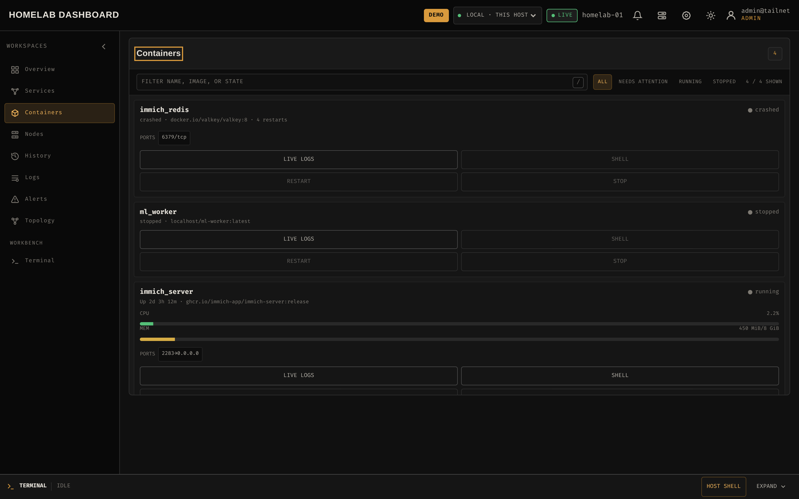
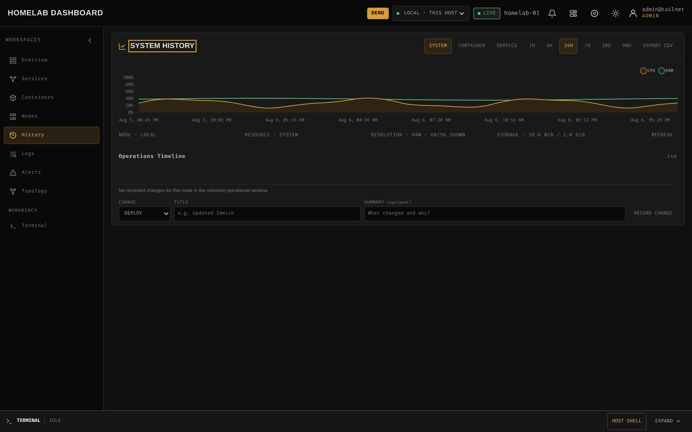
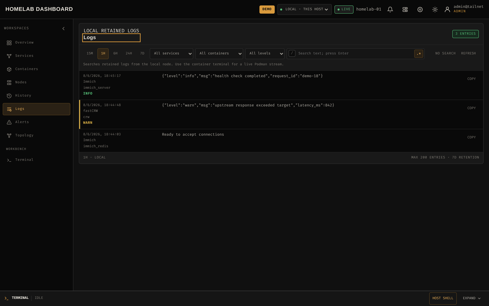
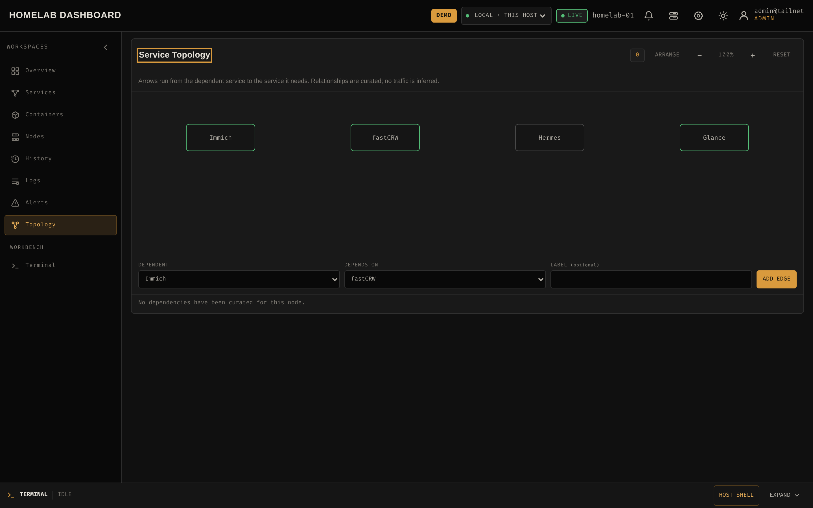
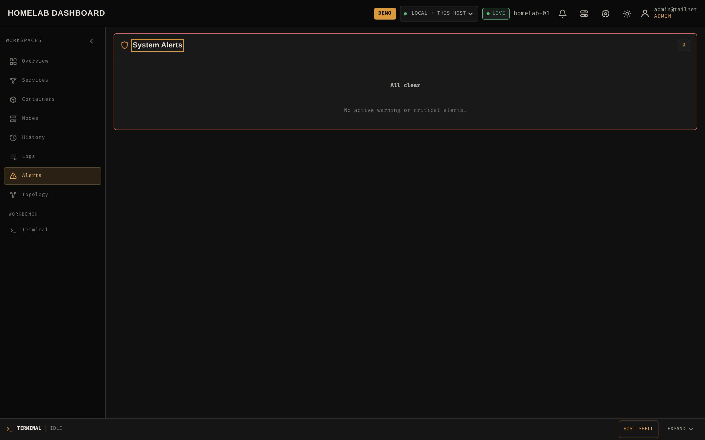
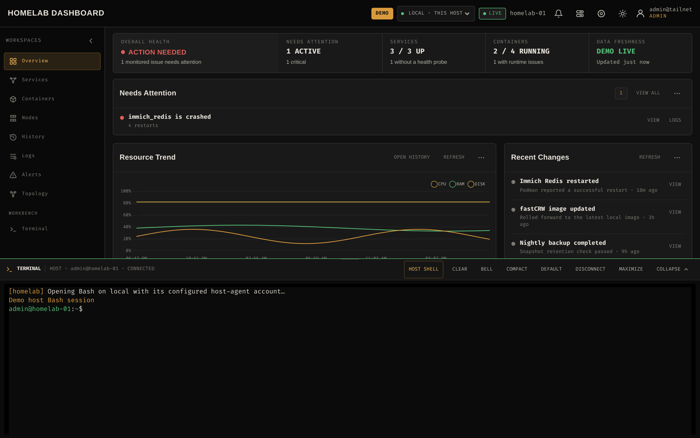
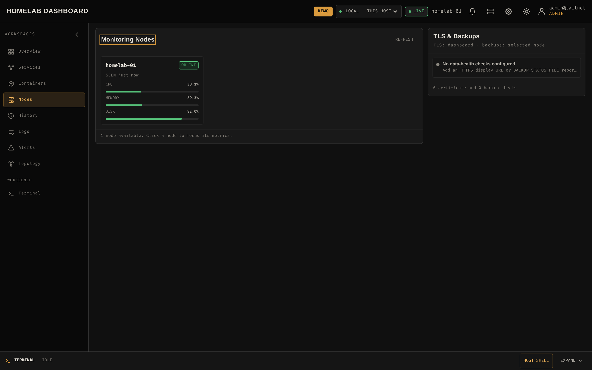
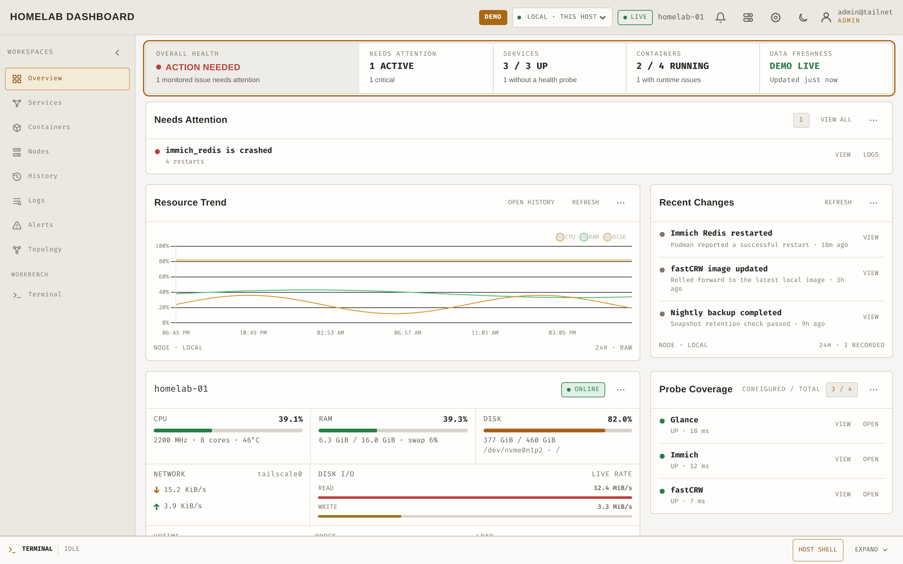

Observe
Host CPU, memory, disk, network, load and temperature; container health and resource usage; TLS certificate observations; service uptime and backup freshness — live and as 90-day history.
Tailscale-only · Zero inbound ports · No Node.js
Observe services, SLOs, backup freshness and container health across up to five rootless Podman nodes — then open the correct container or host shell without exposing a single admin port.
Move your cursor — the grid responds.

Live demo
The full operator workflow with deterministic mock data — try regex log search, open a container shell, toggle the light theme.
Workspaces
Everything an operator runs on a 1–5 node lab, in one interface — no tab sprawl between metrics, logs and shells.









Capabilities
The four commitments of an operations console — each one implemented in code, not slides.
Host CPU, memory, disk, network, load and temperature; container health and resource usage; TLS certificate observations; service uptime and backup freshness — live and as 90-day history.
Container logs with regex search, interactive container shells, and an explicitly confirmed host Bash — context-linked to the alert or log that sent you there.
Tiered history in one SQLite file: 10-second samples for 48h, rolled up to 1-minute for 30 days and 15-minute for 90 days. Configurable quota, no TSDB.
Your Tailscale identity is the auth plane — no passwords, no exposed admin panel. Identity headers trusted only from loopback; sessions, mutations and shells carry CSRF and same-origin guards.
Per-service availability objectives with 7/30/90-day windows and explicit error budgets. Degraded states are flagged, not hidden.
Curate service-to-service dependencies and see the blast radius of a failing service at a glance.
Security boundary
The host shell is the most trusted feature, so it gets the most guards — and the whole system is designed so there is nothing to port-forward.
No password database. Viewer vs admin comes from your Tailscale login; identity headers are only trusted when the request's peer is loopback.
Local host access goes through a Unix-socket agent; remote nodes dial out over Tailscale WSS. No SSH, no agent listener, no reverse proxy to secure.
An explicit HOST_SHELL_USERS allowlist plus an in-UI confirmation. Session audit records, 15-minute idle timeout, 1-hour hard cap — never auto-resumed.
Dashboard runs read-only with dropped capabilities; host and node agents run as the unprivileged installing account. Three binaries, three privilege boundaries.
Architecture rationale: docs/adr.md · Full boundary: docs/operations.md
Quick start
One command, unprivileged, APT/DNF/Pacman aware. It enables the rootless Podman socket, installs the host agent and starts Compose.
Tailscale Serve terminates HTTPS for the dashboard — no host port is ever published.
Browse to your *.ts.net URL, log in with your tailnet identity, and start observing.
Not another dashboard
Not a bookmark grid, not a Grafana stack, not a container manager — the loop between them. Compare feature-by-feature against Homepage, Uptime Kuma, Beszel, Portainer and more.